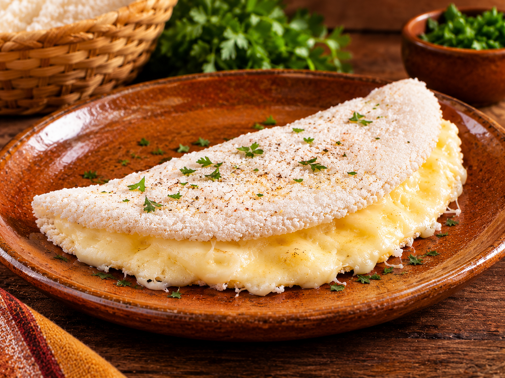
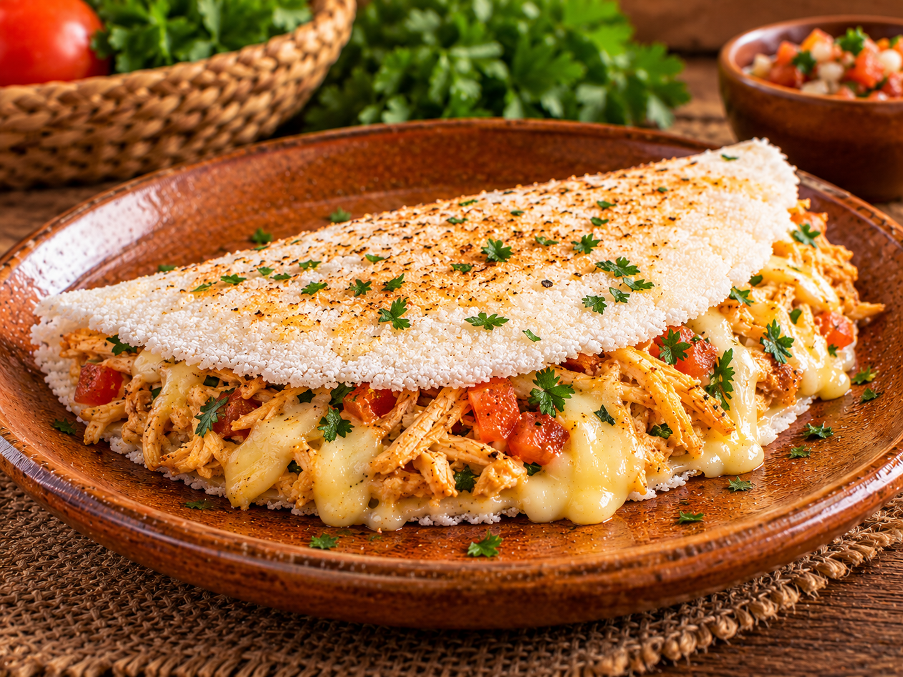
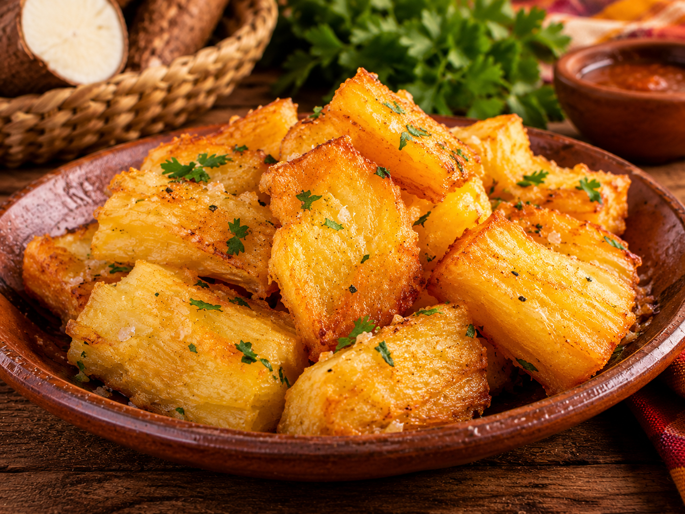
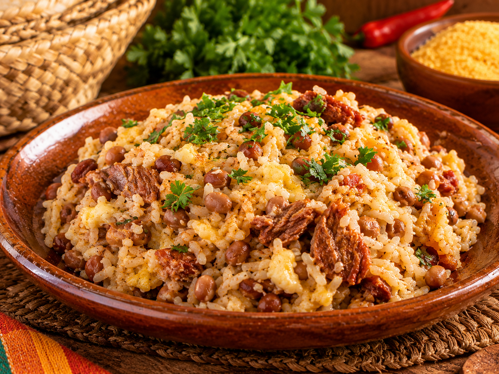
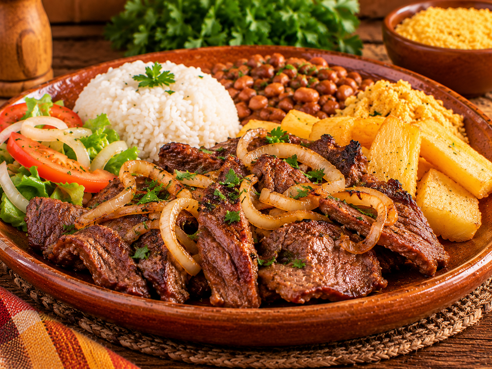
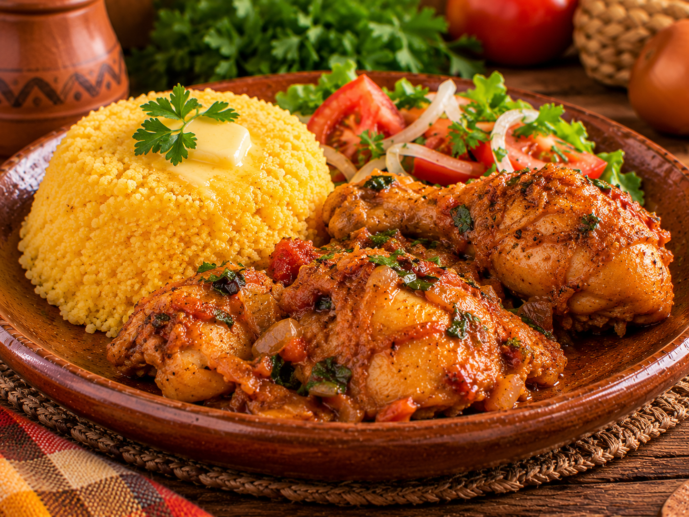

 TAPIOCATapioca de queijoMassa delicada com recheio de queijo derretido.R$ 14,00Adicionar +
 TAPIOCATapioca especialQueijo e recheio da casa para uma pausa saborosa.R$ 18,00Adicionar +
 PORÇÕESMandioca douradaPorção para compartilhar — crocante por fora e macia por dentro.R$ 20,00Adicionar +
 REFEIÇÃOBaião de doisArroz, feijão-fradinho e temperos em uma combinação cheia de sabor.R$ 28,00Adicionar +
 REFEIÇÃOCarne de sol com acompanhamentosUma sugestão regional servida com acompanhamentos da casa.R$ 35,00Adicionar +
 REFEIÇÃOFrango com cuscuzUma refeição caseira e reconfortante para qualquer momento.R$ 26,00Adicionar +